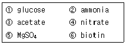
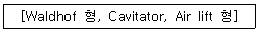

식품기사 (2005-08-07 기출문제)
1과목: 식품위생학
1. 식품에 사용할 수 있는 표백제가 아닌 물질은?
- 차아황상나트륨(sodium hyposulfite)
- 안식향산나트륨(sodium benzoic acid)
- 무수아황산(sulfur dioxide)
- 메타중아황산칼륨(potassium metabisulfite)
(정답률: 70%)

2. 독버섯 중에서 주로 검출되는 유독성분은?
- 솔라닌(solanine)
- 무스카린(muscarine)
- 테물린(temuline)
- 아크로핀(atropine)
(정답률: 85%)
3. 식품의 포장이나 용기에 가장 대표적인 플라스틱은 유기고분자화합물로서 단량체의 중합반응을 통해 합성된다. 다음 중 인체에 미칠 수 있는 플라스틱 성분이 아닌 것은?
- 염화비닐
- styrene dimer
- DOP
- Malathion
(정답률: 40%)
4. 식품공장의 위생관리를 위한 새로운 기법으로 위해분석을 기초로 전체 제조공정 중 엄격한 미생물 관리를 할 부분을 정하여 합리적이고 조직적으로 관리하려는 제도는?
- GMP(Good Manufacturing Practice)제도
- Quality Control제도
- Cold Chain제도
- HACCP(Hazard Analysis Critical Control Point)제도
(정답률: 80%)
5. 독미나리의 독성분인 것은?
- 솔라닌(solanine)
- 셉신(sepsin)
- 테트로도톡신(tetrodotoxin)
- 시큐톡신(cicutixin)
(정답률: 80%)
6. 다음 식중독 세균과 주요원인식품의 연결이 부적절한 것은?
- 병원성 대장균 - 생과일주스
- 살모넬라균 - 계란
- 클로스트리디움 보툴리늄 - 통조림식품
- 바실러스 세레우스 - 햄
(정답률: 57%)
7. 환자의 소변에 균이 배출되어 소독에 유의해야 되는 전염병은?
- 장티푸스
- 콜레라
- 이질
- 디프테리아
(정답률: 80%)
8. 대장균의 존재를 추정하는 시험은 어떻게 하는가?
- 포도당 부이온(glucose bouillon) 배지에서 배양하여 가스발생 유무를 본다.
- 포도당 부이온(glucose bouillon) 배지에서 배양하여 변색 유무를 본다.
- 유당 부이온(lactose bouillon) 배지에서 배양하여 가스 발생유무를 본다.
- 엔도 (Endo)배지에서 배양하여 변색 유무를 본다.
(정답률: 70%)
9. 저온 유통이 식품의 품질에 미치는 바람직한 영향이 아닌 것은?
- 산화반응속도 저하
- 효소반응속도 저하
- 미생물 번식 억제
- 식품보존료 사용
(정답률: 83%)
10. 다음 중 복어중독의 독소는?
- 솔라닌
- 테트로톡신
- 미틸로톡신
- 무스카린
(정답률: 91%)
11. 부패를 억제하는 방법으로 부적당한 것은?
- 탈수
- 훈연
- 염장 및 담장
- 자외선 및 방사선의 차단
(정답률: 75%)
12. 사용 허가된 유화제가 아닌 것은?
- Glycerin fatty acid ester
- Sucrose fatty acid ester
- Sorbitan fatty acid ester
- Mannose fatty acid ester
(정답률: 35%)
13. 이타이이타이 질환은 카드뮴이 인체에 축적되어 나타나는 만성적 질환이다. 카드뮴에 의해 가장 큰 해를 받는 기관은 무엇인가?
- 중추신경계
- 심장
- 신장
- 폐
(정답률: 59%)
14. 다음 중 경구전염 되어 유행성 간염을 일으키는 병원체로서 주로 오염된 음식물 섭취로 인해 발생되는 것은?
- HIV 바이러스
- Noro 바이러스
- Hepatitis A 바이러스
- Poilo 바이러스
(정답률: 51%)
15. 방사능 핵종 중 식품을 경유하여 인체에 들어왔을 때 특히 반감기가 길고 뼈의 칼슘성분과 친화성이 있어서 문제되는 것은?
- 스트론튬 90(Sr-90)
- 세시움 137(Cs-137)
- 요오드 131(I-131)
- 코발트 60 (Co-60)
(정답률: 74%)
16. 장염비브리오균에 의한 식중독의 가장 큰 원인식품이라고 볼 수 있는 식품은?
- 우유
- 음료수
- 어패류
- 연제품
(정답률: 95%)
17. 정수시설(正數施設)의 침전지에서 약품침전의 목적으로 사용하는 것은?
- 명반
- 붕산
- 염소
- 표백분
(정답률: 72%)
18. 다음 중 유해 합성 착색료는?
- 둘신(dulcin)
- 아우라민(auramine)
- 사이클라메이트(cyclamate)
- 포르말린(formalin)
(정답률: 63%)
19. 식품공장에서 사용하는 용수의 안정성을 확보하기 위한 기본적인 처리방법에 해당하지 않는 것은?
- 여과
- 경화
- 연화
- 침전
(정답률: 66%)
20. 분변 오염의 지표로 이용되는 대장균의 MPN(Most Probable Number) 검사에 관한 설명으로 옳은 것은?
- 검체에 10ml 중 있을 수 있는 대장균균수
- 검체에 100ml 중 있을 수 있는 대장균균수
- 검체에 10g 중 있을 수 있는 대장균균수
- 검체에 100g 중 있을 수 있는 대장균균수
(정답률: 83%)
2과목: 식품화학
21. 지방을 많이 함유한 식품이 저장 중에 향이 변화하여 먹기 전에 다음에 설명하는 방법으로 보관하였더니 신선한 향을 유지할 수 있었다. 이 경우에 처리한 방법이 아닌 것은?
- 식품을 냉동 칸에 보관하였다.
- 식품 용기의 헤드스페이스(head space)에 산소를 충진하였다.
- 진공포장을 해 두었다.
- BHT와 BHA를 첨가하였다.
(정답률: 63%)
22. 어류의 비린내 성분과 거리가 먼 것은?
- 피페리딘(piperidine)
- 트리메틸아민(trimethylamine)
- δ-아미노바레르산(δ-aminovaleric acid)
- 이소티오시아네이트(isotiocyanate)
(정답률: 58%)
23. 콜로이드(colloid)입자가 나타내는 성질이 아닌 것은?
- 반투성
- 틴달(Tyndall)
- 브라운(brown) 운동
- 삼투압
(정답률: 59%)
24. 펙틴분자내의 고메톡실 펙틴함량(high methoxyl pectin content)으로 가장 적당한 것은?
- 20 ~ 26%
- 7 ~ 14%
- 3 ~ 6%
- 1 ~ 2%
(정답률: 89%)
25. 산성용액에서 광분해 앴을 때 lumichrome 이 되는 것은?
- 비타민 B1
- 비타민 B2
- 비타민 B
- 나이아신(naiacin)
(정답률: 63%)
26. 사후 경직이 일어나는 경우 생성되는 육류단백질은?
- 엑토미오신
- 미오글로빈
- 트리메틸아민
- 젤라틴
(정답률: 75%)
27. 지방의 소화 · 흡수에 관한 다음 설명 중 틀린 것은?
- 지방은 비극성 물질이기 때문에 소화 · 흡수 및 체내이동에 탄수화물이나 단백질과는 다른 특별한 수송 기구를 요구한다.
- 담즙산염은 지방성분이 위 내용물과 잘 섞이게 유화시켜 주기 때문에 소화 효소의 작용을 쉽게 받게 한다.
- 섭취된 유지의 약 20%는 소화되지 않고 체외로 배설된다.
- 수용성 지방산은 소장 점막을 통해 직접 문맥으로 흡수되어 간장으로 운반된다.
(정답률: 56%)
28. 감자 칩이나 마요네즈와 같이 지방이 함유되거나 갈변화가 예상되는 식품에서 지방 산패나 갈변화 반응을 억제할 목적으로 효소를 이용한다면 어떤 종류의 효소를 사용하는 것이 바람직한가?
- polyphenol oxidase, peroxidase
- glucose oxidase, catalase
- naringinase, tyrosinase
- papain, lipoxygenase
(정답률: 49%)
29. 떫은 맛과 관계가 있는 것은?
- 당분 응결제
- 배당체 응고제
- 지방 응고제
- 단백질 응고제
(정답률: 58%)
30. 분상상이 기체이고 분산매가 액체인 콜로이드 분산 시스템은?
- 거품
- 팽윤
- 유화
- 반투성
(정답률: 74%)
31. 효모에 의하여 발효되지 않으며 핵산계조미료인 IMP, GMP등의 구성성분을 이루는 당은?
- 리보오스(ribose)
- 만노오스(mannose)
- 갈락토오스(galactose)
- 글루코오스(glucose)
(정답률: 50%)
32. 단백질의 열 번성에 대한 설명 중 틀린 것은?
- 단밸질 중에서 알부민과 글로불린이 가장 열 번성이 쉽게 일어난다.
- 단백질에 수분이 많으면 비교적 낮은 온도에서 일어난다.
- 단백질은 일반적으로 동전점에서 가장 열변성이 일어나기 어렵다.
- 단백질은 전해질이 있으면 번성온도가 낮아진다.
(정답률: 66%)
33. 채소류의 특성을 설명하는 것으로 옳지 못한 것은?
- 시금치에 많이 함유된 옥살산은 칼슘과 결합하여 불용성 물질을 만들기도 한다.
- 채소류에 많이 함유된 비타민 C는 홍당무에 함유된 아스콜베이트 옥시다아제(ascorbate oxidase)에 의해 산화된다.
- 무에 함유된 디아스타아제는 단백질의 가수분해를 촉진시키므로 고기류와 함께 먹는 것이 바람직하다. 생선회에 무가 함께 나오는 이유가 바로 이 때문이기도 하다.
- 갓에 함유된 매운 맛 성분인 시니그린(sinigrin)으로 종자는 겨자분으로 이용되기도 한다.
(정답률: 43%)
34. 우유에 68% 알콜을 첨가하였을 때 응고 침전되는 성질을 이용하여 제조한 유가공품은?
- 치즈
- 마가린
- 발효유
- 버터
(정답률: 57%)
35. 과실류의 이화학적 특성을 설명한 것 중 틀린 것은?
- 감이 떫은 것은 탄닌 성분 때문이며, 탈삽에 의하여 탄닌 성분을 당분으로 전환하여 단맛을 부여한다.
- 귤은 펙틴 성분이 많고 쓴맛을 내는 헤스페리딘(hesperidin)성분이 통조림 제조 시에는 백탄의 원인이 된다.
- 과실이 익어감에 따라 연해지는 것은 불용성의 프로토펙틴(protopectin)이 가용성의 펙틴(pectin)으로 변화되기 때문이다.
- Climacteric rise란 과실을 수확한 후 일정 기간이 경과하면 호흡량이 특이하게 증가하는 현상을 말한다.
(정답률: 39%)
36. 우유의 응고에 관계하는 금속 이온은?
- Mg2+
- Mn2+
- Ca2+
- Cu2+
(정답률: 60%)
37. 다음과 같은 조성을 갖는 식품의 품질에 나쁜 영향을 미치는 효소는? (밀가루 25%, 설탕 4%, 당면 25%, 코코넛유 13%, 생크림 9%, 비타민C 1%, 계면활성제 1%, 수분 2%)
- Amylase, cellulase
- Lipoxygenase, lipase
- Polyphenol oxidase, tyrosinase
- Ascorbate oxidase, lactate oxidase
(정답률: 37%)
38. 고유 광회전도(specific rotation) [α]20d가 좌선성인 단당류는?
- α-glucose
- β-glucose
- galagactose
- fructose
(정답률: 24%)
39. 육류 단백질을 과잉으로 섭취하게 되면 가수분해 되는 과정에서 완전한 분해가 이루어지는 데 오랜 시간이 걸리고 또 한편으로는 우리 몸에 축적이 되는 데 이런 경우 과잉 섭취된 단백질의 최종 주 대사산물인 것은 어느 것인가?
- 암모니아 가스
- 탄산가스
- 크레아틴
- 요소
(정답률: 57%)
40. 인체 내에서 칼슘(Ca)이 관여하는 기능이 아닌 것은?
- ATP의 생성과 함께 근육의 이완을 촉진시킨다.
- 알파 아밀라아제와 같은 효소의 활성을 촉진시킨다.
- 혈액이 응고될 때 꼭 필요한 성분 중에 하나이다.
- 뼈나 치아를 형성하는데 중요한 구성성분이 된다.
(정답률: 28%)
3과목: 식품가공학
41. 된장 숙성의 설명과 거리가 먼 것은?
- 탄수화물은 아밀라아제의 당화작용으로 단맛이 생성된다.
- 당분은 효모의 알콜발효로 알콜 등의 방향물질이 생성된다.
- 단백질은 프로테아제에 의하여 아미노산으로 분해되어 구수한 맛이 생성된다.
- 60~65℃에서 3~5시간 유지하여야 숙성이 잘 된다.
(정답률: 66%)
42. 식품의 냉동 저장 중 일어나는 변화로서 냉동해(freezr burn)와 거리가 먼 것은?
- 내부의 산화방지
- 미세한 구멍 생성
- 풍미저하
- 단백질의 탈수변형
(정답률: 71%)
43. 햄 제조공정에서 간 먹이기 조작을 하는 주된 이유는?
- 저장성 및 풍미 부여
- 미생물의 발육 억제
- 혈액 제거
- 색소 부여
(정답률: 73%)
44. 발효유 제품 제조 시 젖산균스타터를 사용하는 목적으로 옳지 않은 것은?
- 우리가 원하는 절대적 다수의 미생물을 발효시키고자 하는 기질 또는 식품에 접종시켜 성장하도록 하므로 원하는 발효가 반드시 일어나도록 해 준다.
- 원하지 않는 미생물의 오염과 성장의 기회를 극소화한다.
- 균일한 성능의 발효미생물을 사용함으로서 자연발효법에 의하여 제조되는 제품보다 품질이 균일하고, 우수한 제품을 많이 생산할 수 있다.
- 발효미생물의 성장속도를 조정할 수 없어서 공장에서 제조계획에 맞출 수 없다.
(정답률: 86%)
45. 미생물 자체를 이용한 것은?
- 잎단백질 농축물
- 단세포 단백질
- 어류 단백질 농축물(분말의 단백)
- 유량 종자 단백질
(정답률: 73%)
46. 유지의 탈취공정에 가장 알맞은 조건은?
- 2~3mmHg의 감압하에서 150~200℃로 가열한 후 수증기 주입
- 2~3mmHg의 감압하에서 200~250℃로 가열한 후 수증기 주입
- 3~6mmHg의 감압하에서 100~150℃로 가열한 후 수증기 주입
- 3~6mmHg의 감압하에서 200~250℃로 가열한 후 수증기 주입
(정답률: 32%)
47. 열처리시 온도에 대한 민감성이 가장 큰 것은?
- Z값에 10℃인 포자
- Z값에 25℃인 효소
- Z값에 35℃인 비타민
- Z값이 50℃인 색소
(정답률: 71%)
48. 5℃에서 저장중인 양배추 5000kg의 호흡열 방출에 의한 냉동부하는? (단 5℃에서 양배추의 저장 시 열 방출량은 63W/ton이다.)
- 315kJ/h
- 454kJ/h
- 778kJ/h
- 1134kJ/h
(정답률: 25%)
49. 터널형 열풍건조기에 있어서 열풍과 식품이 같은 방향으로 진행하는 병류식(竝流式)에 대한 설명 중 틀린 것은?
- 건조속도는 입구에서나 출구에서나 큰 차이가 없이 거의 일정하다.
- 공기의 온도를 높일 수 있어 소요증발량에 비하여 공기량을 비교적 적게 할 수 있다.
- 식품의 크기가 균일하지 못하면 건조의 차가 심한 제품이 되기 쉽다.
- 건조속도는 일반적으로 향류식(恒流式)의 것에 비하여 빠르다.
(정답률: 46%)
50. 20℃의 물 1톤을 24시간 동안 -15℃의 얼음으로 만드는데 필요한 냉동능력은 약 얼마인가?
- 2.36 냉동톤
- 2.10 냉동톤
- 1.78 냉동톤
- 1.35 냉동톤
(정답률: 35%)
51. 쌀의 도정 정도를 표시하는 도정률(盜情率)을 가장 잘 설명한 것은?
- 쌀의 왕겨층이 벗겨진 정도에 따라 표시된다.
- 도정된 정미의 무게가 현미 무게의 몇 %인가로 표시된다.
- 도정된 쌀알이 파괴된 정도로 표시된다.
- 도정과정 중에 손실된 영양소의 %로 표시된다.
(정답률: 74%)
52. 통조림의 저장 과정에서 일어날 수 있는 변질 중 flat sour와 관계가 없는 사항은?
- 가스를 생성하지 않는다.
- Bacillus 속의 세균에 의한 변질이다.
- 한쪽 뚜껑을 누르면 반대쪽 뚜껑이 튀어나온다.
- 내용물이 신맛이 난다.
(정답률: 64%)
53. 알칼리 성분이 달걀흰자를 투명한 적갈색으로 응고시키고, 노른자의 내부는 황갈색으로 되는 계란 가공품은?
- 달걀가루
- 피단
- 동결달걀
- 달걀음료
(정답률: 87%)
54. 유지의 정제공정 중 탈색에 대한 설명으로 바르지 않은 것은?
- 원유에는 카로티노이드계 색소, 엽록소 등이 함유되어 보통 황적색을 띠고 있다.
- 탈산공정에서도 어느 정도 탈색이 되기는 하나 엽록소 등은 흡착법이 아니면 제거하기 어려우므로 특별히 탈색공정이 필요하다.
- 가열탈색법은 손테 기름을 넣고 50℃ 전후로 가열하여 색소를 산화 · 분해시키는 방법이다.
- 흡착탈색법은 품질을 손상시키지 않게 산성백토, 활성백토 및 활성탄소 등의 흡착제를 주로 사용한다.
(정답률: 41%)
55. D값(demical reduction time)의 설명으로 옳은 것은?
- 주어진 미생물을 일정온도에서 100% 사멸시키는 데 요하는 가열시간이다.
- 주어진 미생물을 일정온도에서 90% 사멸시키는 데 요하는 가열시간이다.
- 주어진 미생물을 일정온도에서 50% 사멸시키는 데 요하는 가열시간이다.
- 주어진 미생물을 일정온도에서 10% 사멸시키는 데 요하는 가열시간이다.
(정답률: 78%)
56. 음료용 코코아에 알칼리 처리와 레시틴 코팅(lecithin coating)을 한다면 여기서 레시틴(lecithin)의 주된 기능은?
- 향기 부여
- 용해성 증가
- 흡습성 방지
- 색깔 부여
(정답률: 74%)
57. 미생물에 의한 변질과 가장 관계 깊은 것은?
- 살균 부족
- 수소 팽창
- 패널링
- 관 내면의 부식
(정답률: 74%)
58. 밀제분에 쓰이는 일반적인 공정 중 옳은 순서인 것은?
- 정선 - 순화 - 조질 - 조분쇄 - 사별 - 미분쇄
- 정선 - 순화 - 조분쇄 - 사별 - 조질 - 미분쇄
- 정선 - 조질 - 순화 - 조분쇄 - 사별 - 미분쇄
- 정선 - 조질 - 조분쇄 - 사별 - 순화 - 미분쇄
(정답률: 36%)
59. 콩을 이용한 발효식품이 아닌 것은?
- 된장
- 청국장
- 템페
- 유부
(정답률: 84%)
60. 아이스크림 제조 시 냉동기에서 동결할 대 부피 증가율은 연질 아이스크린인 경우 어느 정도가 가장 적당한가?(오류 신고가 접수된 문제입니다. 반드시 정답과 해설을 확인하시기 바랍니다.)
- 70~80%
- 90~100%
- 10~20%
- 30~50%
(정답률: 12%)
4과목: 식품미생물학
61. Saccharomyces cerevisiae를 포도 착즙액에 접종하고 협기적으로 배양할 때 주로 생성되는 물질은?
- 초산, 물
- 젖산, 이산화탄소
- 에탄올, 젖산
- 이산화탄소, 에탄올
(정답률: 66%)
62. Pasteur effect에 대한 설명으로 옳지 않은 것은?
- Saccharmyces cerevisiae와 같은 미생물이 발효와 호흡을 모두 하는 현상
- 효모의 호기 배양시에는 에탄올 생산량이 낮고 당을 이산화탄소와 물로 완전히 산화시킴
- 협기상태에서는 호기상태에서 보다 당 소비속도가 3~4배 증가됨
- 호기상태에서는 기질이 TCA 회로를 통하여 완전히 산화되어 adenylate energy charge가 낮게 유지됨
(정답률: 29%)
63. 당으로부터 알콜을 생성하는 능력은 약하나 내염성이 강한 효모는?
- Saccharomyces
- Debartomyces
- Kluyveromyces
- Shizosaccharomyces
(정답률: 27%)
64. 미생물의 순수 분리 방법이 아닌 것은?
- 평판 배양법
- Lindner의 소적 배양법
- Micromanipulater를 이용하는 방법
- 모래배양법(토양배양법)
(정답률: 62%)
65. Bacillus subtills의 성질이 아닌 것은?
- 바시트라신(bacitracin)이라는 항생물질을 만든다.
- 프로테아제(protease)를 생산한다.
- 포자를 생성하지 않는다.
- 주로 밥이나 빵에서 증식하여 부패하는 경우가 많다.
(정답률: 68%)
66. 우유를 냉장고에서 장시간 저장 시에 부패취와 쓴맛의 생성, 산패에 관여하는 대표적인 저온균은?
- Pseudomonas 속
- Aeromonas 속
- Bacillus 속
- Clostridium 속
(정답률: 71%)
67. 버섯류에 대한 설명으로 맞지 않는 것은?
- 버섯은 분류학적으로 담자균류에 속한다.
- 유성적으로는 담자포자 형성에 의해 증식을 하며, 무성적으로는 균사 신장에 의해 증식한다.
- 건강보조식품으로 사용되고 있는 동충하초(Cordyceps sp.)도 분류학상 담자균류에 속한다.
- 우리가 식용하는 부위인 자실체는 3차균사에 해당된다.
(정답률: 36%)
68. 세포막에 관한 설명으로 옳지 않은 것은?
- 주로 인지질과 단백질로 구성된 이중막이다.
- 세포막의 이중막 외부는 소수성을 띄며 내부는 친수성을 띈다.
- 세균의 세포막에는 호파노이드(hopanoid)가 존재한다.
- 진핵세포의 세포막에는 스테롤(sterol)이 존재한다.
(정답률: 43%)
69. 다음의 물질 중 mono sodium glutamate의 발효배지에 사용되는 것만 열거한 것은?

- ①, ②, ④, ⑥
- ①, ②, ③, ④
- ①, ②, ⑤, ⑥
- ①, ④, ⑤, ⑥
(정답률: 46%)
70. 라이소자인(lysozyme)과 페니실린은 세균의 어느 부분에 작용하는가?
- 세포막
- 세포벽
- 협막
- 점질물
(정답률: 59%)
71. 다음 중 유황세균은?
- Thiobacillus thioxidans
- Aspergillus flavus
- Penicillium oxalicum
- Streptomyces griseus
(정답률: 60%)
72. 세균의 증식에서 볼 수 있는 유도기(lag phase)가 생기는 이유는?
- 새로운 환경에 적응하기 위하여
- dipicolinic acid를 합성하기 위하여
- 편모를 형성하기 위하여
- 캡슐(capsule)을 형성하기 위하여
(정답률: 78%)
73. 발효에 관여하는 미생물에 대한 설명 중 옳지 않은 것은?
- 글루타민산 발효에 관여하는 미생물은 주로 세균이다.
- 당질을 원료로 한 구연산 발효에는 주로 곰팡이를 이용한다.
- 항생물질 스트렙토마이신(streptomycin)의 발효 생산은 주로 곰팡이를 이용한다.
- 초산 발효에 관여하는 미생물은 주로 세균이다.
(정답률: 43%)
74. Aspergillus 속과 Penicillium 속 곰팡이의 가장 큰 형태적 차이점은?
- 분생포자와 균사의 격벽
- 영양균사와 경자
- 정낭과 병족세포
- 자낭과 기균사
(정답률: 42%)
75. 포도당을 과당으로 전환시킬 때 주로 사용되는 미생물효소는?
- Bacillius subtills의 α-amylase
- Aspergillus oryzae의 α-amylase
- Aspergillus niger의 β-amylase
- Streptomyces cinens의 glucose isomerase
(정답률: 59%)
76. 살아있는 미생물의 수를 측정할 때 사용하는 방법은?
- Haematometer에 개체 수 측정
- 현미경으로 보아 살아 움직이는 균수의 측정
- 평판배양법에 의한 집락 수 측정
- 광학적 측정
(정답률: 32%)
77. 식품으로부터 곰팡이를 분리하여 맥아즙 한천(Malt agar) 배지에서 배양하면서 관찰하였다. 균층의 색은 배양시간이 경과함에 따라 백색에서 점차 청록색으로 변화하였으며, 현미경 시야에서 격벽이 있는 분생자두, 구형의 분생자를 관찰할 수 있었다. 이상의 결과로부터 추정할 수 있는 이 곰팡이의 속명은?
- Aspergillus 속
- Mucor 속
- Penicillium 속
- Trichoderma 속
(정답률: 49%)
78. 효모의 세포벽을 분석하였을 때 일반적으로 가장 많이 검출될 수 있는 화합물은?
- mannan
- Protein
- Lipid and fats
- Glucosamine
(정답률: 57%)
79. 돌연변이에 대한 설명 중 틀린 것은?
- 자연적으로 일어나는 자연돌연변이와 변이원 처리에 의한 인공 돌연변이가 있다.
- 돌연변이의 근본적 원인은 DNA의 nucleotide 배열의 변화이다.
- 염기배열의 변화에는 염기첨가, 염기결손, 염기치환 등이 있다.
- 점돌연변이(point mutation)는 frame shift에 의한 변이에 의해 복귀돌연변이(back mutation)가 되기 어렵다.
(정답률: 65%)
80. 세포융합(cell fusion)의 실험절차로 올바른 것은?
- 재조합체 선택 및 분리 → protopiast의 융합 → 융합체의 재생 → 세포의 protoplast화
- protoplast의 융합 → 세포의 protoplast화 → 융합체의 재생 → 재조합체 선택 및 분리
- 세포의 protoplast화 → protoplast의 융합 → 융합체의 재생 → 재조합체 선택 및 분리
- 융합체의 재생 → 재조합체 선택 및 분리 → protoplast의 융합 → 세포의 protoplast화
(정답률: 79%)
5과목: 생화학 및 발효학
81. Hetero 젖산발효를 함으로서 공업적 젖산 생산에 부적합한 젖산균은?
- Lactobacillus casei
- Lactobacillus plantarum
- Lactobacillus bulgaricus
- Lactobacillus brevis
(정답률: 49%)
82. 사람의 간(Liver)에서 일어나지 않는 반응은?
- 지방산에서 케톤체(ketone body) 생성
- 지방산에서 글루코오스의 생성
- 아미노산에서 글루코오스의 합성
- 암모니아로부터 요소(urea)의 생성
(정답률: 47%)
83. 당밀의 알콜발효시 밀폐식 발효의 장점이 아닌 것은?
- 잡균 오염이 적다.
- 소량의 효모로 발효가 가능하다.
- 운전경비가 적게 든다.
- 개방식 발효보다 수율이 높다.
(정답률: 51%)
84. 전자 전달계(elctorn transport system)에서 사이토크롬(cytochrome) C는 금속이온을 가지고 있는 단백질이다. 사이토크롬 C가 가지고 있는 금속성분은?
- Fe
- Mn
- Cu
- Mo
(정답률: 53%)
85. 다음은 어떤 것과 가장 관계가 깊은가?

- 효소정제장치
- 증류장치
- 발효탱크
- 클로렐라 배양기
(정답률: 44%)
86. 다음 중 에너지 생성 반응이 아닌 것은?
- 광합성 반응
- 산화적 인산화 반응
- 당 신생 반응
- 기질수준 인산화 반응
(정답률: 67%)
87. 비오틴(Biotin) 과잉배지에서 glutamic acid 발효시 첨가하여 주는 물질은 무엇인가?
- 비타민(Vitamin) B12
- 티아민(Thiamin)
- 페니실린(Penicillin)
- 비타민(Vitamin) C
(정답률: 52%)
88. 핵 단백질의 가수분해 순서로 올바른 것은?
- 핵 단백질 → 핵산 → 뉴클레오티드 → 뉴클레오사이드 → 염기
- 핵 단백질 → 핵산 → 뉴클레오사이드 → 뉴클레오티드 → 염기
- 핵산 → 핵 단백질 → 뉴클레오티드 → 뉴클레오사이드 → 염기
- 핵산 → 뉴클레오사이드 → 핵 단백질 → 뉴클레오티드 → 염기
(정답률: 61%)
89. 페닐케톤뇨증(Phenylketonuria)은 유전적 질병으로 오줌에 페닐피루브산(Phenylpyruvate)이 많아 검은 오줌을 누게 된다. 이 병의 주요한 원인이 되는 것은?
- 간에서 당의 대사가 원활치 못하여 오줌으로 페닐피루브산이 나오기 때문이다.
- 티로신(tyrosine) 대사 효소의 결핍 때문이다.
- 페닐알라닌 하드록실화 효소(Phenylalanine hydroxylase)가 없기 때문이다.
- 간에서 암모니아를 제거하지 못하기 때문이다.
(정답률: 48%)
90. 활성오니법(activated sludge process)으로 폐수를 활성오니를 구생하는 미생물이 아닌 것은?
- Bacillus 속
- Clostridium 속
- Pseudomonas 속
- Nitrosomonas 속
(정답률: 42%)
91. 균체내 효소를 추출하는 방법 중 가장 부적당한 것은?
- 초음파 파쇄법
- 기계적 마쇄법
- 염석법
- 동결 융해법
(정답률: 67%)
92. 일반적으로 아미노산 발효공업과 관계 없는 것은?
- 야생주(野生株)를 이용하는 방법
- 영양요구변이주(營養要求變異株)를 이용하는 방법
- 전구물질(前矩物質)첨가법
- 활성오니(活性汚泥)법
(정답률: 47%)
93. 5'-IMP를 직접 생산하기 위해 생산균이 갖추어야 할 조건이 아닌 것은?
- SAMP synthetase와 IMP dehydrogenase의 두 효소활성의 결여
- 5'-IMP의 생합성계에 대한 조절기구의 해제
- 5'-nucleotidase 등의 5'-IMP 분해효소의 결여
- 5'-IMP에 대한 세포투과성의 결여
(정답률: 28%)
94. Fusel oil 성분이 아닌 것은?
- amyl alcohol
- butyl alcohol
- methyl alcohol
- propyl alcohol
(정답률: 70%)
95. 생체내 산화 환원반응이 일어나는 곳은?
- 미토콘드리아(Mitochondria)
- 골지체(Golgi apparatus)
- 세포벽(Cell wall)
- 핵(Nucleus)
(정답률: 77%)
96. 알콜 발효에 있어서 아세트알데히드(acetaldehyde)가 환원하여 에탄올(ethanol)이 생성된다. 이 때 관여하는 효소는?
- 포스파타아제(phosphatase)
- 피루베이트 키나아제(pyruvate kinase)
- 카르복실라아제(carboxylase)
- 알콜 탈수소효소(alcohol dehydrogenase)
(정답률: 56%)
97. 탁 ·약주의 발효형식으로 적당한 것은?
- 단발효
- 단행복 발효
- 병행복 발효
- 비당화 발효
(정답률: 56%)
98. 일반적으로 당의 발효성을 갖지 않는 효모는 어느 것인가?
- Schizosaccharomyces 속
- Rhodotorula 속
- glucose isomerase
- glucose dehydeogenase
(정답률: 46%)
99. HFCS(High Fructose Corn Syrup)55의 생산에 이용되는 효소는?
- amylase
- glucoamylase
- glucose isomerase
- glucose dehydrogenase
(정답률: 57%)
100. 정미성 핵산의 제조방법이 아닌 것은?
- RNA 분해법
- DNA 분해법
- 생화학적 변이주를 이용하는 방법
- Purine nucleotide 합성의 중간체를 축적시켜 화학적으로 합성하는 방법
(정답률: 60%)